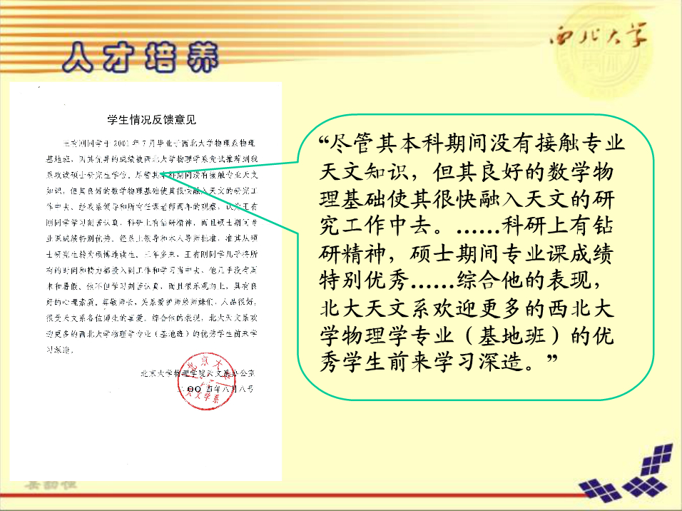
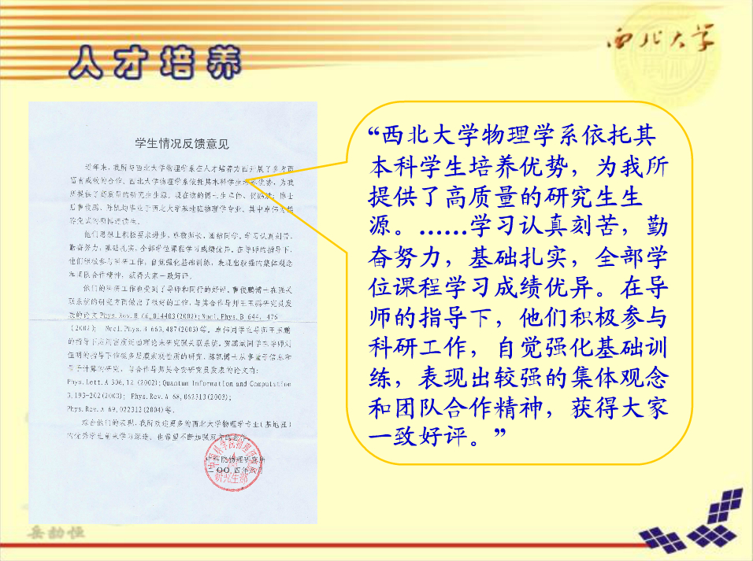
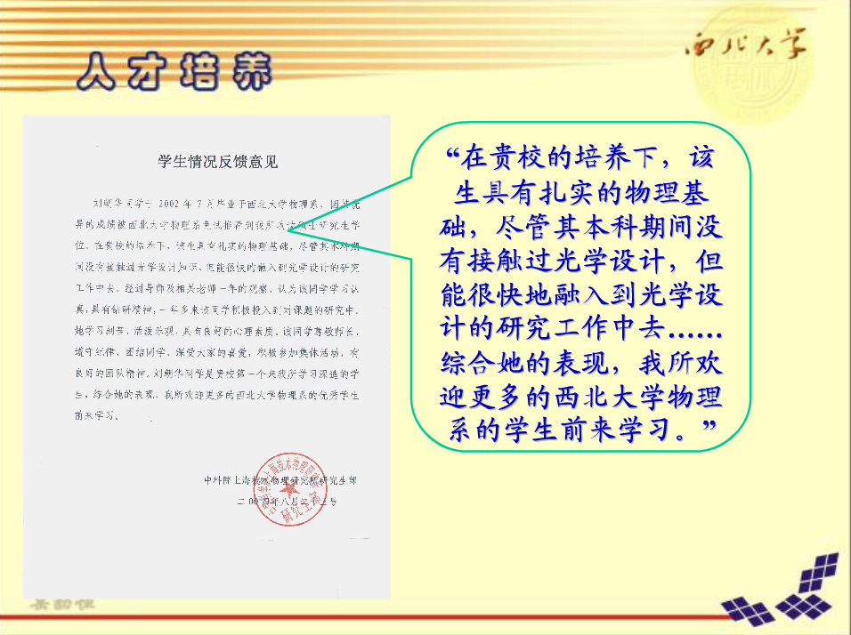
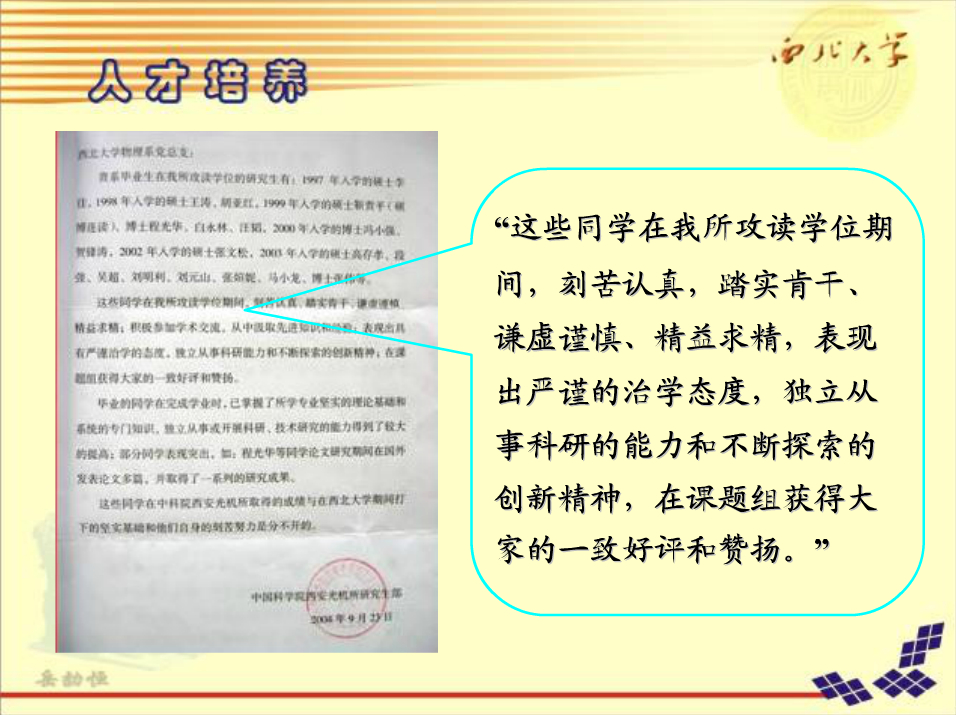
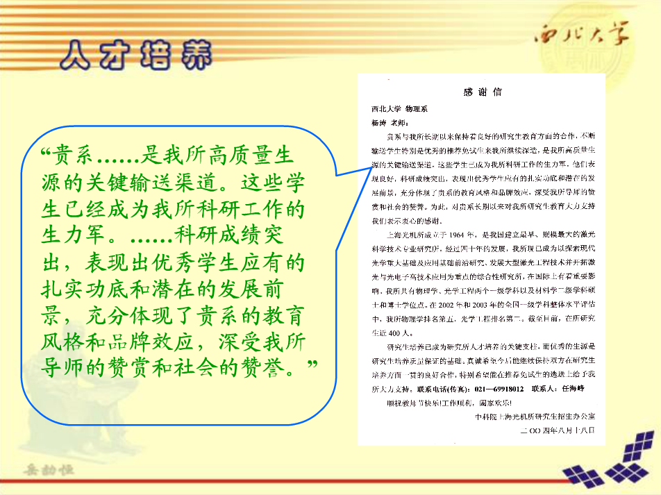
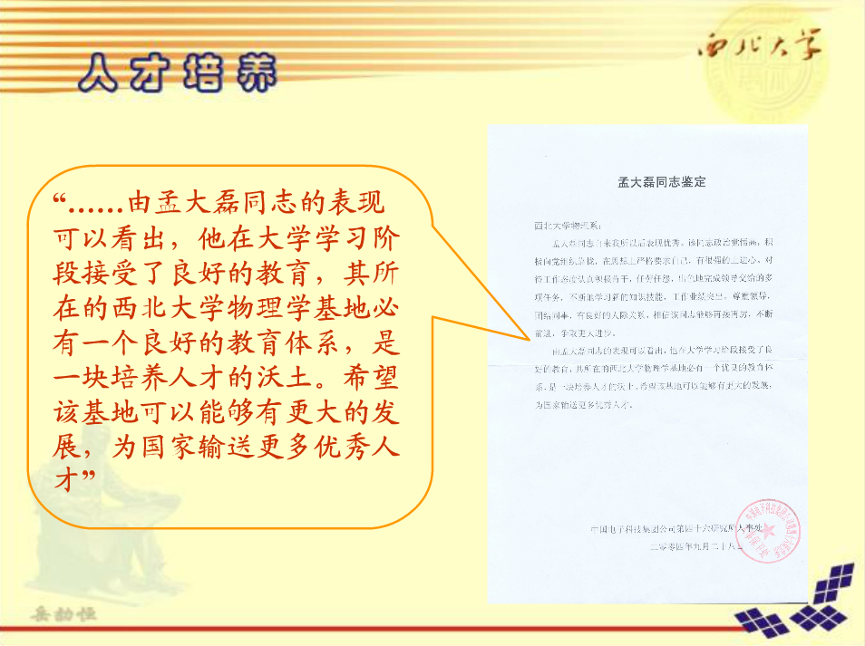

近三年来，通过对学生的问卷调查，基地班学生的满意度都在94分以上，光信息科学与技术和应用物理两个专业的满意度都在91分以上。学生普遍认为教学内容具有深度、广度，在教学中能够紧密联系量子力学前沿发展动态，课堂信息量大，教学方法灵活、多样，能够充分激发学生的学习热情。在课后通过答疑时间和网上教学平台与学生进行广泛的交流，并取得了良好的效果。报考南开大学、中科院光机所、中科院物理所等科研院所的学生量子力学的考分平均成绩120分以上。
我们对培养的部分毕业生进行了跟踪调查，有150多家单位给了反馈意见。我们的学生以其扎实的基础、良好的发展潜力受到用人单位的肯定。 用人单位普遍反映我们培养的毕业生有以下三个特点：
(1)数理基础扎实，物理专业基础厚实，知识面宽，适应能力强，掌握一定的物理前沿和交叉 领域知识。
(2)实行了有效的创新能力培养和较为系统、规范的科学研究训练，初步具有科研人员的素养、
较强的创新能力和创新意识。
(3)学风严谨，吃苦耐劳，综合素质高，具有良好的团队合作精神。很多人扎根西部。






|